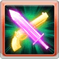

グウィン
基本資訊
| 定位 | 攻擊 |
| 得意武器 | 劍/銃 |
| 種族 | 人類 |
| CV | 千本木彩花 |
立繪
上限解放前
上限解放後
奧義
| ルナティック･ライン | |
| 4.5倍水屬性傷害 ・40萬×自己HP對應次數無屬性傷害(最多3次) └HP>75%:3次 └75%>HP>50%:2次 └HP<50%:1次 |
技能
CD:5 |
リベレート･マギア |
| 自己リベレートセル+3(最多5/不可消除) #HP>50%時 ・2動×1T |
|
CD:12 |
ラム･イット･ダウン |
| 自己攻擊+50%(不可消除/不可延長)×1T └普攻時:傷害上限+116萬 └奧義時:傷害上限+50萬 #消耗リベレートセルLv增加持續時間 ・1回合+消耗數(最多4T) |
|
|  CD:0 |
ガンズ･アンド･ローゼズ |
| 敵方1倍水屬性傷害×3次 自己偷打 #バースト･シェル-1 #戰鬥開始時，バースト･シェル=3 |
被動技能
 |
アリアネンサの契約者 |
| 戰鬥開始時和奧義時リベレートセル+2(最多5/不可消除) #普攻時消耗リベレートセル ・必TA ・50%水屬性追擊 |
|
|
螺旋の陣 |
| #劍得意的水屬性角色技傷性能上升 ・技能傷害1.2倍 ・技傷上限+10% #銃得意的水屬性角色奧義性能上升 ・奧義傷害+30% ・奧義上限+10% |
武器